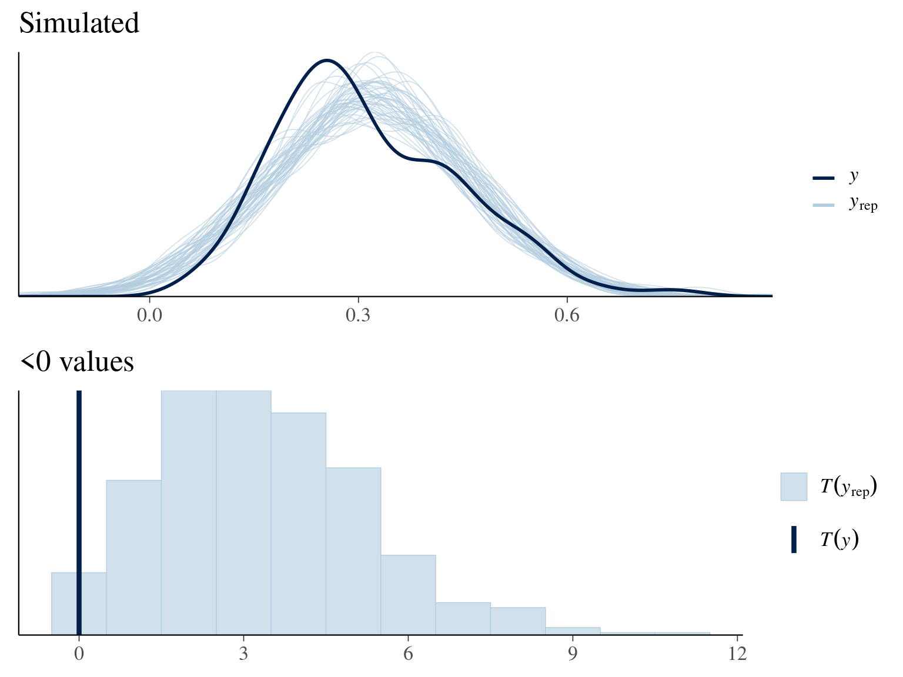

Wind Power Generation Efficiency and Seasonality
Jussi Huotari
Dec 2020
Clean Electricity?
Traditionally burn fossil fuels
Need to change to renewables
Renewables are feasible and profitable
Problem: intermittent
Generation Efficiency
- Wind: 7% of total electricity
- Yearly generation 5.9TWh
- Nominal capacity 2284MW
- Generation efficiency
\[ \frac{5.9TWh}{2284MW \times 365 \times 24h} = 29.5\% \]
Regression Model
Objective:
- Trend of generation efficiency
- Patterns to help plan demand response
Two models in Rstan/Stan
- M1: Simple linear Gaussian trend
- M2: Trend + hierarchical seasonal components
Data Set
Data Set
Model M1
...
transformed parameters {
vector[N] mu = alpha + beta * x;
}
model {
alpha ~ normal(.3, .2);
beta ~ normal(0, .1);
sigma ~ normal(.25, .5);
y ~ normal(mu, sigma);
}
...
M1 Regression
M1 PPC
Model M2
Time series as components: \(y(t) = g(t) + s(t)\)
- \(g(t)\) is linear trend
- \(s(t)\) is seasonal component
- Model monthly means and standard deviations
- Hierarchy: 6 groups of 12 observations
M2 Diagram

M2 Checking

M2 Diagnostics
ddiag <- fread("fit_monitor.csv")
ddiag %>% arrange(Rhat) %>%
select(Rhat, n_eff, Bulk_ESS, Tail_ESS) %>% tail()## Rhat n_eff Bulk_ESS Tail_ESS
## 1: 1.009974 553 556 1022
## 2: 1.009974 546 549 1005
## 3: 1.009976 550 554 1000
## 4: 1.009980 550 553 1000
## 5: 1.009980 551 554 1003
## 6: 1.009982 551 555 1003M2 Plot
M2 Monthly Posterior
Model Comparison
##
## Computed from 4000 by 298 log-likelihood matrix
##
## Estimate SE
## elpd_loo 215.9 11.8
## p_loo 13.1 1.1
## looic -431.8 23.7
## ------
## Monte Carlo SE of elpd_loo is 0.1.
##
## All Pareto k estimates are good (k < 0.5).
## See help('pareto-k-diagnostic') for details.## Model MSE elpd_loo
## 1 M1 0.017 180
## 2 M2 0.013 216Forecast
Seasonal Forecast
Conclusion
- Predicted yearly increase mean is 1.4%
- 90% probability interval (0.8%, 2.1%)
- Large seasonal variance
- July median 0.18 vs December median 0.39!
- Capacity x 3 during the past six years.
- High daily variation
- More at jussihuotari.com/randstan/demo_wind/